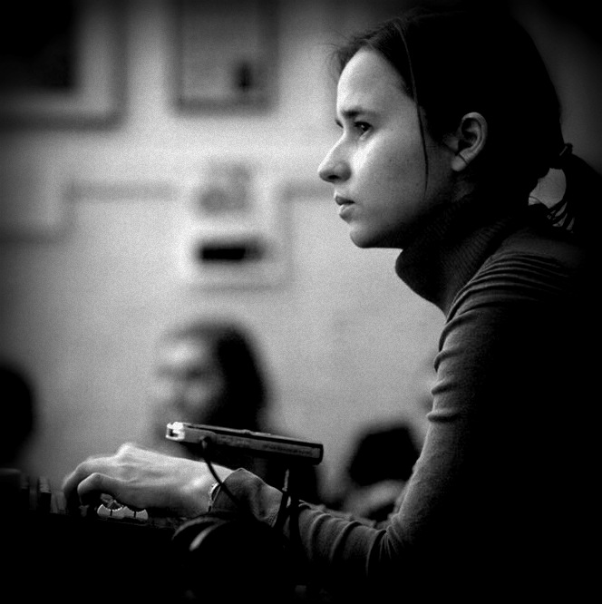

## About me

I am a classically trained musician and a professional sound engineer specializing on studio recording, live sound, and mixing.
A graduate of the sound engineering department at the renowned Gnesin Music Academy in Moscow, I've got 12 years of professional experience working as a recording, mixing, and live sound engineer at various studios, concert halls, and music clubs around the world. Before moving to Heidelberg I was a mix engineer at Digital Bear Entertainment studio in Boston, US and lately a live sound engineer at Jazzkeller Sauschdall in Ulm, Germany.
Previously, I specialized exclusively in sound, creating high-quality audio recordings and sound effects. Now, I have expanded my professional scope to include filming music videos, providing a full range of services for musicians and artists.
[//]: # See my full CV here